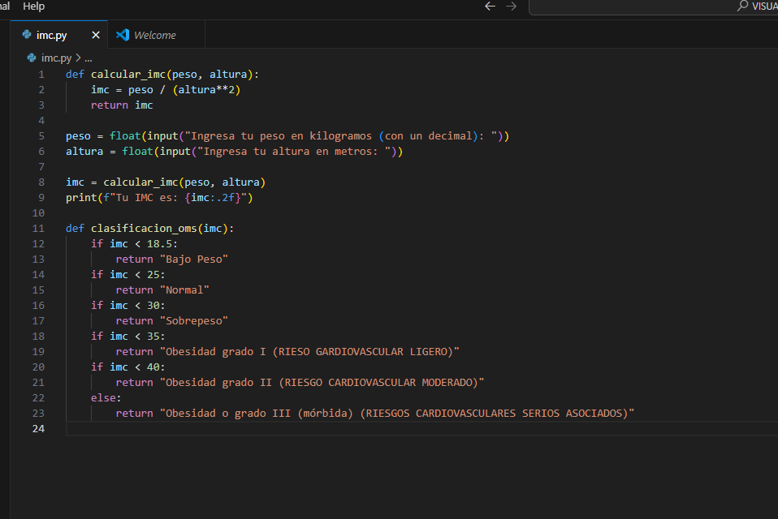
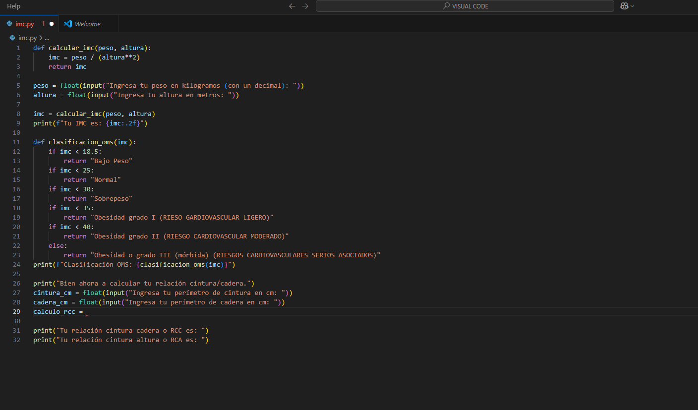
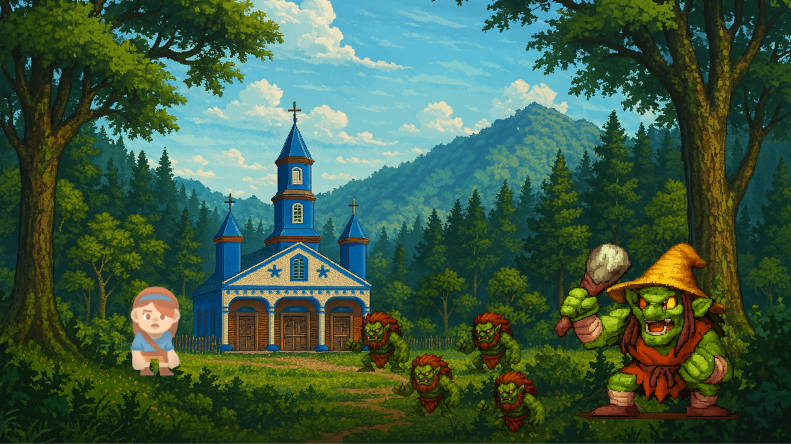
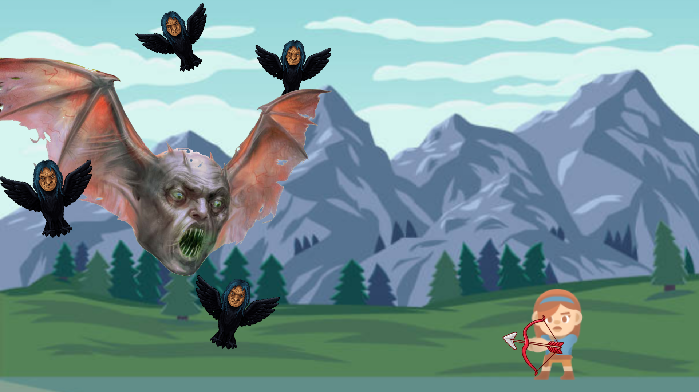

Programa de Antropometría
Usando el Índice de Masa Corporal y el Índice de Cun Bae, este programa estima el porcentaje de grasa del usuario usando los datos de:
Peso(kg), Altura (m), Perímetro de cintura (cm), perímetro de cadera (cm) Sexo (M/F)
Materiales necesarios: Cinta métrica y balanza.
El programa usa TIMESTAMP para generar la fecha de la consulta (dd.mm.aaa.) y guardar los datos en un archivo .csv
¿Por qué el IMC no es suficiente?
Aunque el IMC es ampliamente utilizado, tiene una gran limitación: No distingue entre masa muscular y masa grasa.
Una persona muy musculosa puede ser clasificada como “obesa” según el IMC, a pesar de tener poca grasa corporal.


TrenTren y CaiCai: Guardianes del Archipiélago
TrenTren y Caicai: Guardianes del Archipiélago es un videojuego chileno en desarrollo, programado en GODOT,
inspirado en la rica mitología del territorio de Chile y ambientado en un mundo pixelado de estética retro, evocando la energía y el estilo visual de los videojuegos clásicos de los años 90.
TrenTren y CaiCai son dos personajes icónicos de la cultura popular que representan la conexión entre la naturaleza y la tecnología.
TrenTren, un tren de alta velocidad, simboliza el avance tecnológico, mientras que CaiCai, un ave nativa, representa la belleza y fragilidad del ecosistema.
Juntos, abogan por un equilibrio entre el progreso y la conservación ambiental.
El proyecto busca rescatar elementos del imaginario cultural nacional a través del lenguaje contemporáneo del videojuego,
conectando tradición y modernidad en una experiencia interactiva educativa y entretenida.


